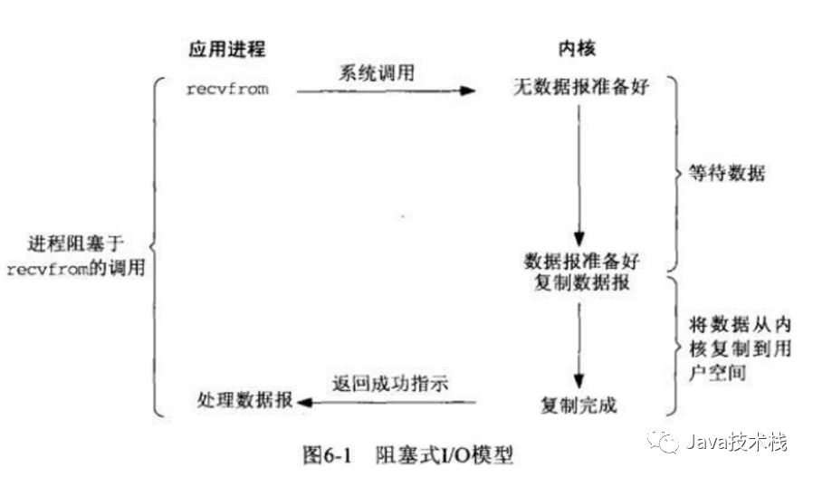
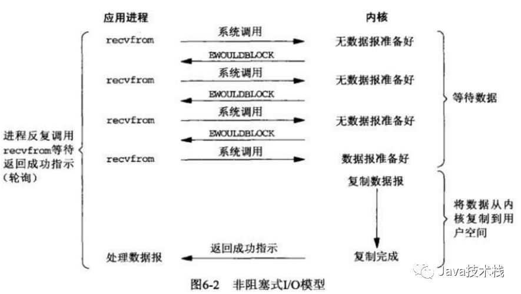
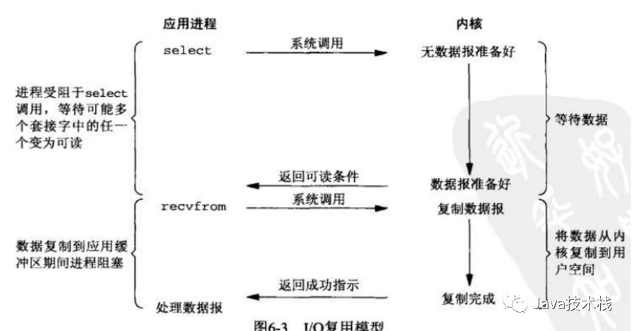
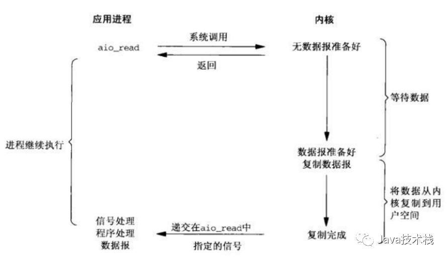

同步、异步、阻塞、非阻塞都是和I/O（输入输出）有关的概念，最简单的文件读取就是I/O操作。而在文件读取这件事儿上，可以有多种方式。
本篇会先介绍一下I/O的基本概念，通过一个生活例子来分别解释下这几种I/O模型，以及Java支持的I/O模型。
基本概念
在解释I/O模型之前，我先说明一下几个操作系统的概念
文件描述符fd
文件描述符（file descriptor）是计算机科学中的一个术语，是一个用于表述指向文件的引用的抽象化概念。
文件描述符在形式上是一个非负整数。实际上，它是一个索引值，指向内核为每一个进程所维护的该进程打开文件的记录表。 当程序打开一个现有文件或者创建一个新文件时，内核向进程返回一个文件描述符。 在程序设计中，一些涉及底层的程序编写往往会围绕着文件描述符展开。文件描述符这一概念往往只适用于UNIX、Linux这样的操作系统。
缓存I/O
缓存I/O又被称作标准I/O，大多数文件系统的默认I/O操作都是缓存I/O。在Linux的缓存I/O机制中， 操作系统会将I/O的数据缓存在文件系统的页缓存中，也就是说，数据会先被拷贝到操作系统内核的缓冲区中， 然后才会从操作系统内核的缓冲区拷贝到应用程序的地址空间。
缓存I/O的缺点是数据在传输过程中需要在应用程序地址空间和内核进行多次数据拷贝操作，这些数据拷贝操作所带来的CPU以及内存开销是非常大的。
下面我以一个生活中烧开水的例子来形象解释一下同步、异步、阻塞、非阻塞概念。
同步和异步
同步请求 A调用B，B的处理是同步的，在处理完之前他不会通知A，只有处理完之后才会明确的通知A。
异步请求 A调用B，B的处理是异步的，B在接到请求后先告诉A我已经接到请求了，然后异步去处理，处理完之后通过回调等方式再通知A。
所以说，同步和异步最大的区别就是被调用方的执行方式和返回时机。 同步指的是被调用方做完事情之后再返回，异步指的是被调用方先返回，然后再做事情，做完之后再想办法通知调用方。
阻塞和非阻塞
阻塞请求 A调用B，A一直等着B的返回，别的事情什么也不干。
非阻塞请求 A调用B，A不用一直等着B的返回，先去忙别的事情了。
所以说，阻塞和非阻塞最大的区别就是在被调用方返回结果之前的这段时间内，调用方是否一直等待。 阻塞指的是调用方一直等待别的事情什么都不做。非阻塞指的是调用方先去忙别的事情。
阻塞、非阻塞和同步、异步的区别
阻塞、非阻塞说的是调用者。同步、异步说的是被调用者。
Unix中的五种I/O模型
对于一次I/O访问（以read举例），数据会先被拷贝到操作系统内核的缓冲区中，然后才会从操作系统内核的缓冲区拷贝到应用程序的地址空间。 所以说，当一个read操作发生时，它会经历两个阶段：
第一阶段：等待数据准备 (Waiting for the data to be ready)。
第二阶段：将数据从内核拷贝到进程中 (Copying the data from the kernel to the process)。
对于socket流而言
第一阶段：通常涉及等待网络上的数据分组到达，也就是被复制到内核的某个缓冲区。
第二阶段：把数据从内核缓冲区复制到应用进程缓冲区。
Unix下五种I/O模型
- 同步阻塞I/O
- 同步非阻塞I/O
- I/O多路复用（select和poll）
- 信号驱动I/O（SIGIO）
- 异步非阻塞 IO
同步阻塞I/O
阻塞I/O下请求无法立即完成则保持阻塞，阻塞I/O分为如下两个阶段。
阶段1：等待数据就绪。网络I/O的情况就是等待远端数据陆续抵达，也就是网络数据被复制到内核缓存区中，磁盘I/O的情况就是等待磁盘数据从磁盘上读取到内核态内存中。
阶段2：数据拷贝。出于系统安全，用户态的程序没有权限直接读取内核态内存，因此内核负责把内核态内存中的数据拷贝一份到用户态内存中。
这两个阶段必须都完成后才能继续下一步操作

所以，blocking IO的特点就是在IO执行的两个阶段都被block了。
同步非阻塞I/O
就是阶段1的时候用户进程可选择做其他事情，通过轮询的方式看看内核缓冲区是否就绪。如果数据就绪，再去执行阶段2。
也就是说非阻塞的recvform系统调用调用之后，进程并没有被阻塞，内核马上返回给进程，如果数据还没准备好， 此时会返回一个error。进程在返回之后，可以干点别的事情，然后再发起recvform系统调用。
重复上面的过程， 循环往复的进行recvform系统调用。这个过程通常被称之为轮询。轮询检查内核数据，直到数据准备好， 再拷贝数据到进程，进行数据处理。需要注意，第2阶段的拷贝数据整个过程，进程仍然是属于阻塞的状态。
在linux下，可以通过设置socket使其变为non-blocking。当对一个non-blocking socket执行读操作时，流程如图所示：

所以，nonblocking IO的特点是用户进程需要不断的主动询问kernel数据好了没有。
I/O多路复用
我这里只想重点解释一下I/O多路复用这种模型，因为现在用的最多。很多地方也称为事件驱动IO模型，只是叫法不同，意思都一个样。
IO多路复用是指内核一旦发现进程指定的一个或者多个IO条件准备读取，它就通知该进程。
目前支持I/O多路复用的系统调用有 select、pselect、poll、epoll，I/O多路复用就是通过一种机制，一个进程可以监视多个描述符， 一旦某个文件描述符fd就绪（一般是读就绪或者写就绪），能够通知程序进行相应的读写操作。
但select、pselect、poll、epoll本质上都是同步I/O，因为他们都需要在读写事件就绪后自己负责进行读写，也就是说这个读写过程是阻塞的， 而异步I/O则无需自己负责进行读写，异步I/O的实现会负责把数据从内核拷贝到用户空间。
相比较于同步非阻塞I/O，它的改进的地方在于，原来需要用户进程去轮询的这事儿交给了内核线程帮你完成， 而且这个内核线程可以等待多个socket，能实现同时对多个IO端口进行监听。

多路复用的特点是通过一种机制一个进程能同时等待IO文件描述符，内核监视这些文件描述符（套接字描述符）， 其中的任意一个进入读就绪状态，select， poll，epoll函数就可以返回。对于监视的方式， 又可以分为 select， poll， epoll三种方式。
所以，如果处理的连接数不是很高的话，使用select/epoll的web server不一定比使用多线程 + 阻塞IO的web server性能更好，可能延迟还更大。 也就是说，select/epoll的优势并不是对于单个连接能处理得更快，而是在于能处理更多的连接。推荐阅读：Spring Boot 的 10 个核心模块
高并发的程序一般使用同步非阻塞方式而非多线程 + 同步阻塞方式。要理解这一点，首先要扯到并发和并行的区别。 比如去某部门办事需要依次去几个窗口，办事大厅里的人数就是并发数，而窗口个数就是并行度。 也就是说并发数是指同时进行的任务数（如同时服务的 HTTP 请求），而并行数是可以同时工作的物理资源数量（如 CPU 核数）。
通过合理调度任务的不同阶段，并发数可以远远大于并行度，这就是区区几个 CPU 可以支持上万个用户并发请求的奥秘。 在这种高并发的情况下，为每个任务（用户请求）创建一个进程或线程的开销非常大。而同步非阻塞方式可以把多个 IO 请求丢到后台去， 这就可以在一个进程里服务大量的并发 IO 请求。
IO多路复用归为同步阻塞模式
异步非阻塞 IO
相对于同步IO，异步IO不是顺序执行。用户进程进行aio_read系统调用之后，无论内核数据是否准备好，都会直接返回给用户进程， 然后用户态进程可以去做别的事情。等到socket数据准备好了，内核直接复制数据给进程，然后从内核向进程发送通知。IO两个阶段， 进程都是非阻塞的。
Linux提供了AIO库函数实现异步，但是用的很少。目前有很多开源的异步IO库，例如libevent、libev、libuv。异步过程如下图所示：

Java中四种I/O模型
上一章所述Unix中的五种I/O模型，除信号驱动I/O外，Java对其它四种I/O模型都有所支持。
- Java传统IO模型即是同步阻塞I/O
- NIO是同步非阻塞I/O
- 通过NIO实现的Reactor模式即是I/O多路复用模型的实现
- 通过AIO实现的Proactor模式即是异步I/O模型的实现